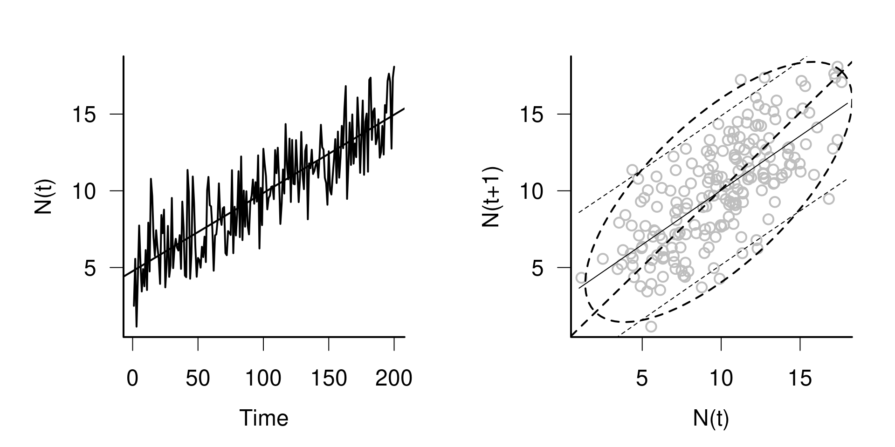
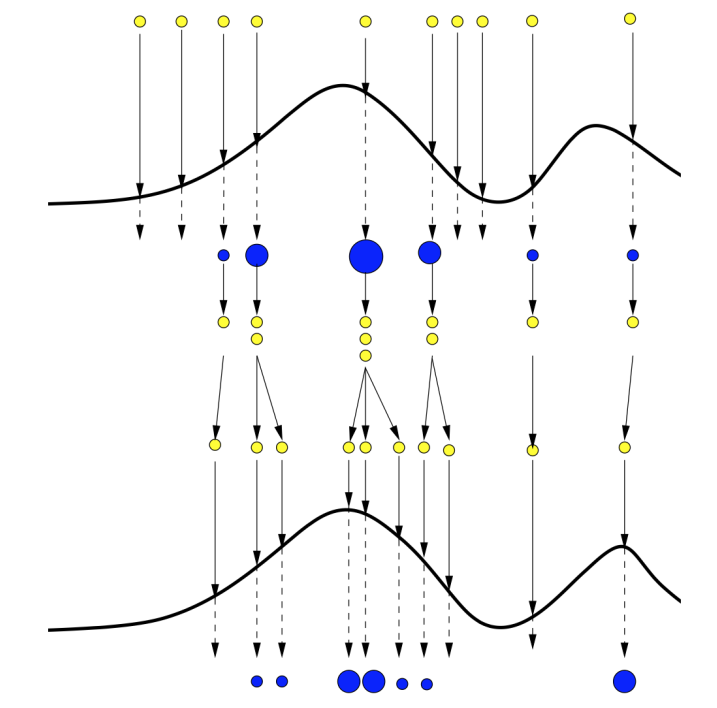
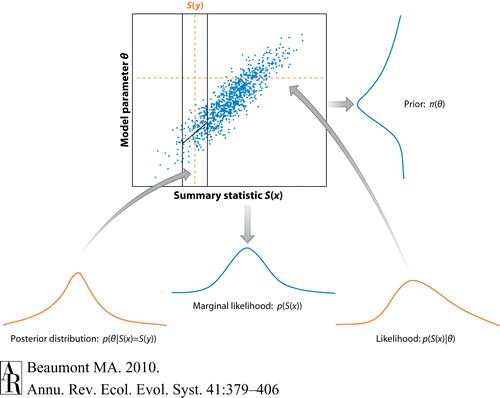

estimating parameters of nonlinear stochastic dynamical systems
Ben Bolker
2024-02-07

overview
- you have a dynamical system you’re interested in
- usually nonlinear, usually stochastic
- want to estimate its parameters by matching it to data
- big field (e.g. material from a full-semester course here)
- highlights only!
system characteristics
- stochasticity: in observation (measurement), process, or both?
- time: discrete or continuous?
- state: continuous or discrete?
- state distribution: Gaussian or non-Gaussian?
- dimensionality (= number of state variables): low or high?
In each case the latter value(s) make fitting computationally & conceptually harder. You may have to make some compromises depending on which characteristics matter most.
observation and process noise
deterministic process with observation noise
- the simplest case (Bolker (2008) §11.4.1)
- trajectory matching (or “shooting”)
- given parameters \(\mathbf \theta\) (possibly including ICs), solve for \(N(t)\) (e.g. by integrating the ODE) and compare with \(N_{\textrm{obs}}(t)\)
- least-squares fitting
- maximum likelihood (e.g. \(N_{\textrm{obs}}(t) \sim \textrm{Poisson}(\lambda = N(t))\))
trajectory-matching pitfalls
- identifiability, numerical instability, multiple modes/optima
- fix parameters based on prior knowledge (but!! see Elderd, Dukic, and Dwyer (2006))
- reparameterize to get approximately independent components (e.g. \(\{\beta, \gamma\} \to \{{\cal R}_0, r\}\) for an epidemic model)
- regularize/add priors
- try optimization from many starting points
- see Raue et al. (2013)
sensitivity equations
- suppose we have derivatives of gradients, e.g. for SIR model \[ \frac{dI}{dt} = \beta SI - \gamma I \to \frac{d\left(\frac{dI}{dt}\right)}{d\beta} = SI \]
- then gradients of trajectory points wrt parameters are e.g.: \[ \frac{d\,I(t)}{d\,\beta} = \int \frac{d\left(\frac{dI}{dt}\right)}{d\beta} \, dt \]
- derivs of gradients: analytically/symbolically, or autodiff
- \(\to\) gradient descent, quasi-Newton methods etc.
- fitode package
more on trajectory matching
process error only: gradient matching
- now suppose observation has no error
- all stochasticity is in the transition from \(N(t)\) to \(N(t+1)\) (not in \(N_{\textrm{obs}}(t)\))
- one-step-ahead prediction
- easier for discrete time (Bolker (2008) §11.4.2)
- can work for ODEs if we smooth the observations first (Ellner, Seifu, and Smith 2002)
process plus observation error: linear, discrete-time, Gaussian
- immediately gets much harder
- state-space models: track best estimate of underlying state
- Kalman filter (Bolker (2008) §11.6.1)
- at each time step, updates the current estimate of \(N_t\) and its variance based on the current observation
- fast, powerful, widely used
- multivariate versions, e.g. MARSS package (multivariate autoregressive state-space)
- for nonlinear models, the extended Kalman filter uses a local linearization
MCMC state-space models
- use Gibbs sampling to sample each \(N(t)\) conditional on everything else in the model
- automated via e.g. JAGS package
- Bolker (2008) §11.6.2
Gaussian state-space models
- suppose all latent variables are Gaussian (maybe on log scale etc.)
- estimate all latent variables as part of MLE
- use Laplace approximation etc. to approximate integrals
- use computational tricks (automatic differentiation) to do high-dimensional optimization
- can also do this with HMC
‘plug and play’ methods (Aaron King)
pomppackage (Partially Observed Markov Processes)dprocess: compute likelihood of a transition \(P(N(t+1)|N(t))\)rprocess: simulate a trajectory (draw from \(N(t+1) \sim D(N(t))\))dmeasure,rmeasure: ditto, but for measurement/observation step- if we have
rprocessanddmeasurewe can use sequential methods
sequential methods
estimating state distribution one step at a time (like the Kalman filter)
- sequential Monte Carlo (Kantas et al. 2009):
- particle filtering
- iterated filtering
- particle MCMC
particle filtering
- start in a known state distribution
- represented by an ensemble of particles
- simulate all particles forward one time step (with known \(\theta\))
- calculate likelihoods of each particle based on \(N_{\textrm{obs}}(t+1)\)
- resample particles, weighted by their likelihood
particle filtering
from David Champredon, from Doucet, Freitas, and Gordon (2001)
sequential methods
- iterated filtering (Ionides, Bretó, and King 2006): simultaneously estimates parameters and latent states
- particle MCMC: particle filtering to estimate \({\cal L}(\theta)\), then use MCMC to estimate \(\theta\)
likelihood-free methods
- we have neither
dprocessnordmeasure - “feature-based”, “probe-matching” (Kendall et al. 1999)
- define some set of summary statistics that capture aspects of the outcome you care about; match with observed values
likelihood-free methods: approximate Bayesian computation (ABC)
- determine a small(ish) number of summary statistics
- establish priors for all model parameters
- pick many sets of parameters from the priors and simulate
- parameter sets with summary statistics close to observed == posterior
- Beaumont (2010)
ABC picture
likelihood-free methods: synthetic likelihood
- determine a small(ish) number of summary statistics
- simulate dynamics (including process and observation noise) many times
- compute summary statistics
- estimate a multivariate distribution (MVN, multivariate (skew)-\(t\), etc.)
- compute synthetic likelihood of observed statistics based on the ensemble
- maximize this value
challenges
- HMC for stochastic ODEs? (Betancourt 2021)
- discrete stochasticity with absorbing boundaries/extinction
- approximating discrete states with moment matching (Li, Dushoff, and Bolker (2017); Pekos unpub.)
- high-dimensional (e.g. spatial) problems
- overdispersion and noise in continuous-time discrete processes (e.g. Hawkes process (Lamprinakou, Gandy, and McCoy 2023), gamma white noise (Bretó and Ionides 2011))
references
Beaumont, Mark A. 2010. “Approximate Bayesian Computation in Evolution and Ecology.” Annual Review of Ecology, Evolution, and Systematics 41 (1): 379–406. https://doi.org/10.1146/annurev-ecolsys-102209-144621.
Betancourt, Michael. 2021. “An Infinitesimal Introduction to Stochastic Differential Equation Modeling.” https://betanalpha.github.io/assets/case_studies/stochastic_differential_equations.html.
Bolker, Benjamin M. 2008. Ecological Models and Data in R. Princeton, NJ: Princeton University Press.
Bretó, Carles, and Edward L. Ionides. 2011. “Compound Markov Counting Processes and Their Applications to Modeling Infinitesimally over-Dispersed Systems.” Stochastic Processes and Their Applications 121 (11): 2571–91. https://doi.org/10.1016/j.spa.2011.07.005.
Doucet, Arnaud, Nando de Freitas, and Neil Gordon. 2001. “An Introduction to Sequential Monte Carlo Methods.” In Sequential Monte Carlo Methods in Practice, edited by Arnaud Doucet, Nando de Freitas, and Neil Gordon, 3–14. Statistics for Engineering and Information Science. New York, NY: Springer. https://doi.org/10.1007/978-1-4757-3437-9_1.
Elderd, Bret D., Vanja M. Dukic, and Greg Dwyer. 2006. “Uncertainty in Predictions of Disease Spread and Public Health Responses to Bioterrorism and Emerging Diseases.” Proceedings of the National Academy of Sciences 103 (42): 15693–97. https://doi.org/10.1073/pnas.0600816103.
Ellner, Stephen P., Yodit Seifu, and Robert H. Smith. 2002. “Fitting Population Dynamic Models to Time-Series Data by Gradient Matching.” Ecology 83 (8): 2256–70.
Fasiolo, Matteo, Natalya Pya, and Simon N. Wood. 2016. “A Comparison of Inferential Methods for Highly Nonlinear State Space Models in Ecology and Epidemiology.” Statistical Science 31 (1). https://doi.org/10.1214/15-STS534.
Grinsztajn, Léo, Elizaveta Semenova, Charles C. Margossian, and Julien Riou. 2021. “Bayesian Workflow for Disease Transmission Modeling in Stan.” Statistics in Medicine 40 (27): 6209–34. https://doi.org/10.1002/sim.9164.
Ionides, E. L., C. Bretó, and A. A. King. 2006. “Inference for Nonlinear Dynamical Systems.” Proceedings of the National Academy of Sciences 103 (49): 18438–43. https://doi.org/10.1073/pnas.0603181103.
Kantas, N., A. Doucet, S. S. Singh, and J. M. Maciejowski. 2009. “An Overview of Sequential Monte Carlo Methods for Parameter Estimation in General State-Space Models.” IFAC Proceedings Volumes, 15th IFAC Symposium on System Identification, 42 (10): 774–85. https://doi.org/10.3182/20090706-3-FR-2004.00129.
Kendall, Bruce E., Cheryl J. Briggs, William W. Murdoch, Peter Turchin, Stephen P. Ellner, Edward McCauley, Roger M. Nisbet, and Simon N. Wood. 1999. “Why Do Populations Cycle? A Synthesis of Statistical and Mechanistic Modeling Approaches.” Ecology 80 (6): 1789–1805. https://doi.org/10.1890/0012-9658(1999)080[1789:WDPCAS]2.0.CO;2.
Lamprinakou, Stamatina, Axel Gandy, and Emma McCoy. 2023. “Using a Latent Hawkes Process for Epidemiological Modelling.” PLOS ONE 18 (3): e0281370. https://doi.org/10.1371/journal.pone.0281370.
Li, Michael, Jonathan Dushoff, and Benjamin M. Bolker. 2017. “Fitting Mechanistic Epidemic Models to Data: A Comparison of Simple Markov Chain Monte Carlo Approaches.” bioRxiv, 110767. http://biorxiv.org/content/early/2017/06/14/110767.abstract.
Raue, Andreas, Marcel Schilling, Julie Bachmann, Andrew Matteson, Max Schelke, Daniel Kaschek, Sabine Hug, et al. 2013. “Lessons Learned from Quantitative Dynamical Modeling in Systems Biology.” PLoS ONE 8 (9): e74335. https://doi.org/10.1371/journal.pone.0074335.
Wood, Simon N. 2010. “Statistical Inference for Noisy Nonlinear Ecological Dynamic Systems.” Nature 466 (August): 1102–4. https://doi.org/10.1038/nature09319.